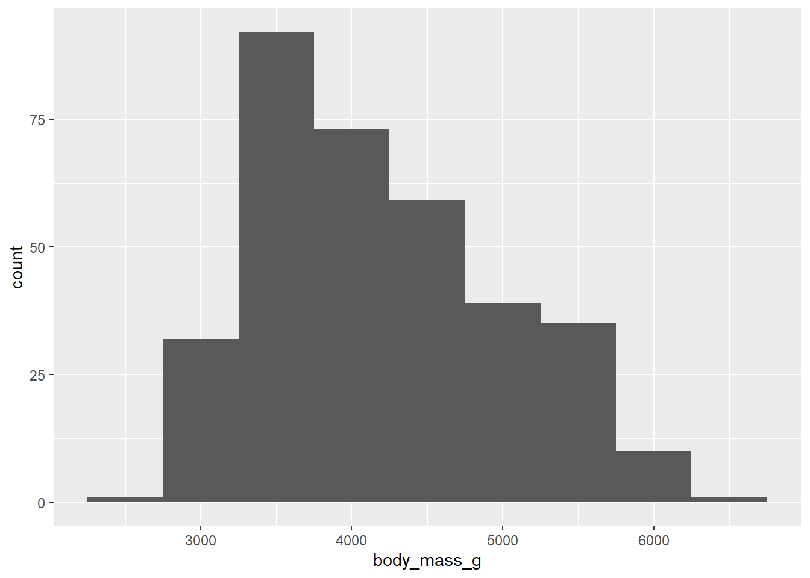
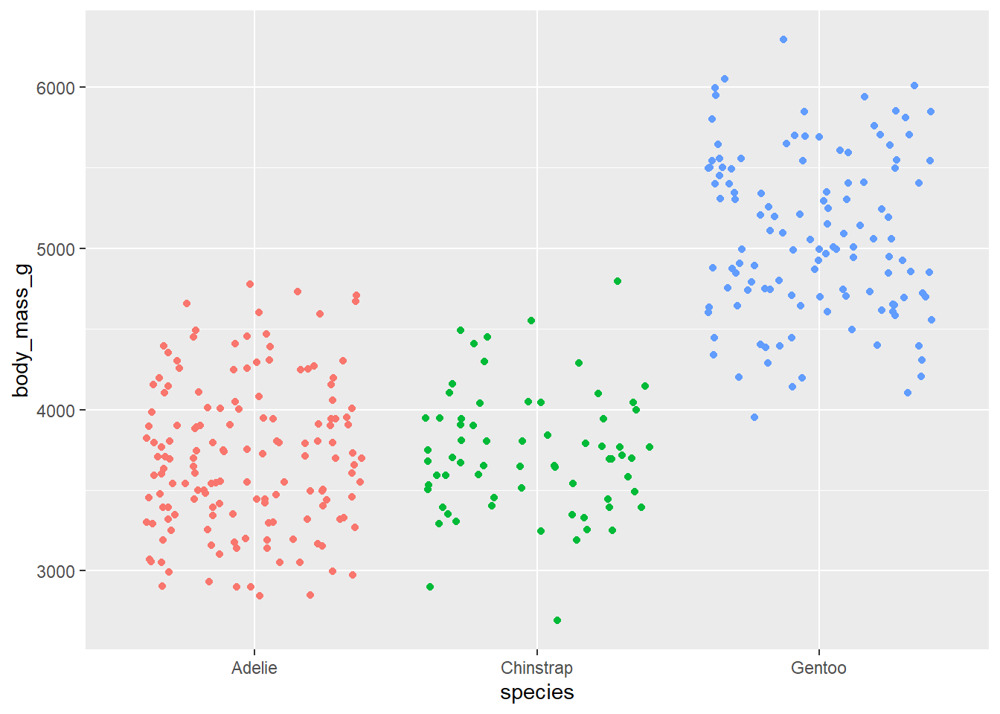
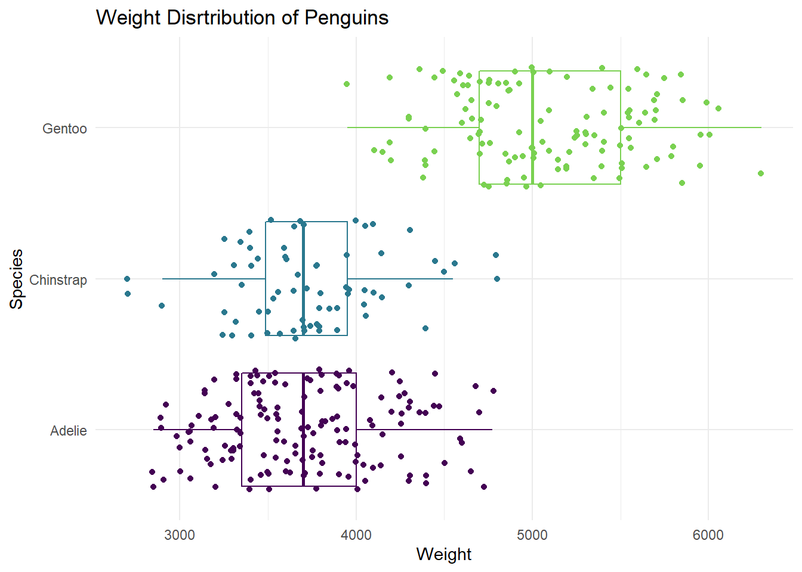
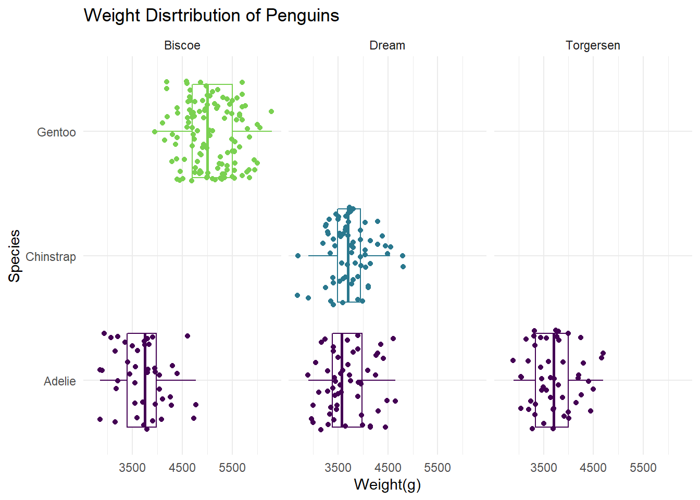
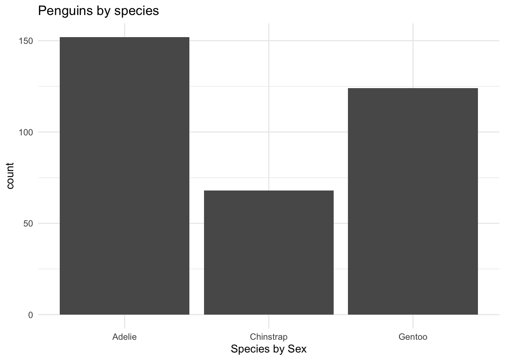
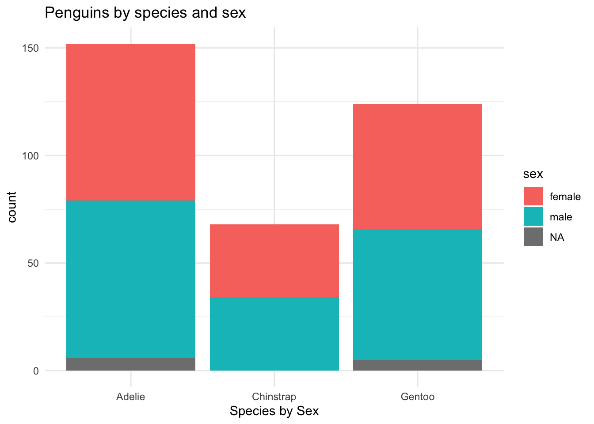

library(tidyverse)
library(palmerpenguins) #The data set name is penguinsAE 03: Visualizing penguins
Application exercise
Important
Go to the course GitHub organization and locate the repo titled ae-03-data-types-YOUR_GITHUB_USERNAME to get started.
This AE is due Sunday, Sep 10 at 11:59pm.
For all analyses, we’ll use the tidyverse and palmerpenguins packages.
The dataset we will visualize is called penguins. Let’s glimpse() at it.
glimpse(penguins)Rows: 344
Columns: 8
$ species <fct> Adelie, Adelie, Adelie, Adelie, Adelie, Adelie, Adel…
$ island <fct> Torgersen, Torgersen, Torgersen, Torgersen, Torgerse…
$ bill_length_mm <dbl> 39.1, 39.5, 40.3, NA, 36.7, 39.3, 38.9, 39.2, 34.1, …
$ bill_depth_mm <dbl> 18.7, 17.4, 18.0, NA, 19.3, 20.6, 17.8, 19.6, 18.1, …
$ flipper_length_mm <int> 181, 186, 195, NA, 193, 190, 181, 195, 193, 190, 186…
$ body_mass_g <int> 3750, 3800, 3250, NA, 3450, 3650, 3625, 4675, 3475, …
$ sex <fct> male, female, female, NA, female, male, female, male…
$ year <int> 2007, 2007, 2007, 2007, 2007, 2007, 2007, 2007, 2007…Visualizing penguin weights - Demo
Single variable
Note
Analyzing the a single variable is called univariate analysis.
Create visualizations of the distribution of weights of penguins.
- Make a histogram. Set an appropriate binwidth.
ggplot(penguins,
aes(x = body_mass_g)) +
geom_histogram(binwidth = 500)
- Make a boxplot.
ggplot(penguins,
aes(x = body_mass_g)) +
geom_boxplot()
- Based on these, determine if each of the following statements about the shape of the distribution is true or false.
- The distribution of penguin weights in this sample is left skewed.
- The distribution of penguin weights in this sample is unimodal (roughly symmetric).
Two variables
Note
Analyzing the relationship between two variables is called bivariate analysis.
Create visualizations of the distribution of weights of penguins by species. Note: aesthetic is a visual property of one of the objects in your plot. Aesthetic options are:
- shape
- color
- size
- fill
- Make a single histogram. Set an appropriate binwidth.
ggplot(penguins,
aes(x = body_mass_g, fill = species )) +
geom_histogram(binwidth = 250, alpha = .5)
- Use multiple histograms via faceting, one for each species. Set an appropriate binwidth, add color as you see fit, and turn off legends if not needed.
ggplot(penguins,
aes(x = body_mass_g, fill = species )) +
geom_histogram(binwidth = 250, alpha = .5, show.legend = FALSE) +
facet_wrap("species", ncol = 1)
- Use side-by-side box plots. Add color as you see fit and turn off legends if not needed.
ggplot(penguins,
aes(x = species, y = body_mass_g, fill = species)) +
geom_boxplot(show.legend = F)
- Use density plots. Add color as you see fit.
ggplot(penguins,
aes(x = body_mass_g, fill = species)) +
geom_density(alpha = .5)
- Use violin plots. Add color as you see fit and turn off legends if not needed.
ggplot(penguins,
aes(x = species, y = body_mass_g, fill = species)) +
geom_violin(alpha = 0.5 , show.legend = F)
- Make a jittered scatter plot. Add color as you see fit and turn off legends if not needed.
ggplot(penguins,
aes(x = species, y = body_mass_g, color = species)) +
geom_jitter(show.legend = FALSE)
- Use beeswarm plots. Add color as you see fit and turn off legends if not needed.
library(ggbeeswarm)
ggplot(penguins,
aes(x = species, y = body_mass_g, color = species)) +
geom_beeswarm(show.legend = FALSE)
- Use multiple geoms on a single plot. Be deliberate about the order of plotting. Change the theme and the color scale of the plot. Finally, add informative labels. Hint: scale_color_viridis: https://ggplot2.tidyverse.org/reference/scale_viridis.html theme: https://ggplot2.tidyverse.org/reference/ggtheme.html
ggplot(data = penguins,
mapping = aes(x = body_mass_g, y = species, color = species)) +
geom_boxplot(binwidth = 500) +
geom_jitter() +
scale_color_viridis_d(option = "D", end = 0.8) +
theme_minimal() +
labs(x= "Weight",
y = "Species",
title= "Weight Disrtribution of Penguins") +
theme(legend.position = "None")
Multiple variables
Note
Analyzing the relationship between three or more variables is called multivariate analysis.
- Facet the plot you created in the previous exercise by
island. Adjust labels accordingly.
ggplot(data = penguins,
mapping = aes(x = body_mass_g, y = species, color = species)) +
geom_boxplot(binwidth = 500) +
geom_jitter() +
scale_color_viridis_d(option = "D", end = 0.8) +
theme_minimal() +
labs(x= "Weight(g)",
y = "Species",
title= "Weight Disrtribution of Penguins") +
theme(legend.position = "None") +
facet_wrap("island")
Before you continue, let’s turn off all warnings the code chunks generate and resize all figures. We’ll do this by editing the YAML.
Visualizing other variables - Your turn! Optional
- Pick a single categorical variable from the data set and make a bar plot of its distribution.
ggplot(penguins,
aes(x = species)) +
geom_bar(show.legend = T) +
scale_color_viridis_d(option = "D", end = 0.8) +
theme_minimal() +
labs(
x = "Species by Sex",
title = "Penguins by species"
)
- Pick two categorical variables and make a visualization to visualize the relationship between the two variables. Along with your code and output, provide an interpretation of the visualization.
ggplot(penguins,
aes(x = species, fill = sex)) +
geom_bar(show.legend = T) +
scale_color_viridis_d(option = "D", end = 0.8) +
theme_minimal() +
labs(
x = "Species by Sex",
title = "Penguins by species and sex"
)
It appears that there is little relationship between the type of species and sex of species. Across all three species, the sex for each species seems to be fairly proportional.
- Make another plot that uses at least three variables. At least one should be numeric and at least one categorical. In 1-2 sentences, describe what the plot shows about the relationships between the variables you plotted. Don’t forget to label your code chunk.
ggplot(penguins,
aes(x = species, y = body_mass_g, color = species)) +
geom_beeswarm(show.legend = FALSE) +
geom_boxplot(show.legend = FALSE, alpha = 0.5) +
facet_wrap(~island) +
scale_color_viridis_d(option = "D", end = 0.8) +
theme_minimal() +
labs(
x = "Species",
y = "Body mass (g)",
title = "Body mass of penguins in Palmer Archipelago",
subtitle = "By species and island"
)
It appears that the body mass of penguins depends on both the species of the penguin and the island the penguin is on. The Gentoo penguins on the Biscoe island are much larger than the others.